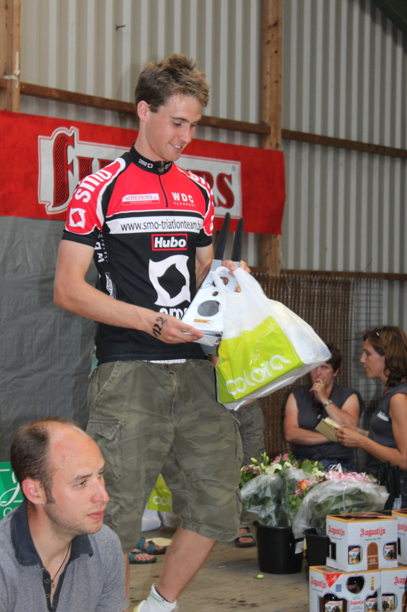

Verslag Tom Vander Hoogerstraete: Zondag 28 juni vond voor de 2e keer de triatlon van Eeklo plaats vlak voor de deuren van onze hoofdsponsor. Een prachtig triatlonweertje, een goed georganiseerde wedstrijd op een selectief parcours en een massa supporters en deelnemers (triatlon leeft in het meetjesland!) zorgden voor een prachtige namiddag. Met maar liefst 23 mannen en 5 vrouwen aan de start die de SMO kleuren verdedigden en een top 6 die zowel bij de mannen als vrouwen voor de helft door SMO’ers werd ingevuld, mag gezegd worden dat het een groot rood feest werd.
Verslag Tom Vander Hoogerstraete: Zondag 28 juni vond voor de 2e keer de triatlon van Eeklo plaats vlak voor de deuren van onze hoofdsponsor. Een prachtig triatlonweertje, een goed georganiseerde wedstrijd op een selectief parcours en een massa supporters en deelnemers (triatlon leeft in het meetjesland!) zorgden voor een prachtige namiddag. Met maar liefst 23 mannen en 5 vrouwen aan de start die de SMO kleuren verdedigden en een top 6 die zowel bij de mannen als vrouwen voor de helft door SMO’ers werd ingevuld, mag gezegd worden dat het een groot rood feest werd.
Het zwemmen werd voor één van de zeldzame keren in België zonder wetsuit afgewerkt. Bij de vrouwen kwam Fee samen met Marjolein Truyens (latere winnares) uit het water. Op een halve minuut gevolgd door Anne Marie. Veerle (1e triatlon), Melanie en Kathleen kwamen in een grotere groep uit het water. Wielrensters/triatlete Veerle (5e) zette de snelste fietstijd neer, kwam tot bij Anne-Marie maar moest in het lopen Anne-Marie (2e) en Melanie (3e) laten gaan. Kathleen werd na haar blessureleed van de laatste maand mooi 11e en Fee werd als jongste deelnemer in haar eerste kwarttriatlon 15e.
Ik kwam een 45-tal seconden voor een groepje met Sander, Fred en Philippe Malcolm uit het water. Ook ex-zwemmers Cas, Dirk en Patrick Blomme mochten samen met Hannes vooraan in de wedstrijd met hun fietsnummer starten. Het selectief fietsparcours zorgde er al snel voor dat het een man tegen man gevecht werd op de fiets waarbij ik mij nogal opgejaagd voelde door mijn anders zo sympathieke teamgenoot Sander. Na een heel snelle eerste ronde gereden te hebben kwam Sander 5 seconden dichterbij en moest ik echt gas terug nemen. Ik had gedacht hem op het einde van het fietsnummer terug te zien, maar blijkbaar had hij ook heel veel gegeven in de eerste ronde en kon ik het fietsonderdeel met 1’45” voorsprong beëindigen. Ondertussen rukte Hannes op naar voor en kon ook Boelli een sterk fietsnummer neerzetten en een 55-tal atleten voorbij vlammen. Met benen die ondertussen bijna ontploften van het melkzuur (volgens mij bestaan er niet veel parcours met evenveel bochten als in Eeklo) begon ik dan het loopnummer. Sander kon met de snelste looptijd en geen krampen nog een minuutje goedmaken maar ik was gelukkig nog fris genoeg om hem te mogen opvolgen in Eeklo. Hannes werd na een constant loopnummer mooi 6e.
Bedankt aan alle supporters, fans, sponsors en heel sympathieke teamgenoten!

Uitslag2 Dupont Anne-Marie 2:02:22
3 Matthys Melanie 2:05:21
5 Ingels Veerle 2:08:43
11 Meire Kathleen 2:19:20
15 Lampaert Fee 2:26:58
1 Vander Hoogerstraete Tom 1:45:18
2 Dobbelaere Sander 1:46:16
6 Vandermoere Hannes 1:51:46
24 Boelens Davy 2:02:46
31 Hellebuyck Dirk 2:04:08
33 Blomme Patrick 2:04:45
35 De Vrieze Bart 2:05:03
42 Dormaels Frederik 2:05:51
48 Haeck Steven 2:07:25
53 Cardon Jurgen 2:08:40
54 De Ridder Koen 2:08:45
59 De Roos Wim 2:09:48
63 Smitz Michel 2:10:55
65 Van Waeyenberghe David 2:11:10
67 De Smet Patrick 2:11:19
68 Slock Renaat 2:11:24
74 Van Meirvenne Cas 2:12:54
77 Vandaele Kristof 2:13:07
105 Ost Maarten 2:19:12
116 Overmeire Aäron 2:21:10
137 Reyniers Bart 2:27:29
138 Beerens Steven 2:28:02
Verslag Sander Dobbelaere: Na mijn 10-de plaats in Brugge vond ik de tijd gekomen om het nog iets beter te doen! Alhoewel een 1-ste plaats van vorig jaar verbeteren moeilijk is. Zeker met een ijzersterke Tom aan de start. Het deelnemersveld was trouwens behoorlijk sterk met top 5 kandidaten zoals Malcolm, Moreel, Janssens,Van Cleven om niet onze Hannes te vergeten.
De week voor Eeklo was heel zwaar (door de breuk met mijn vriendin) en van trainen is niet veel in huis gekomen. Vijf minuten voor de wedstrijd nog geen enkel beetje stress te bespeuren. Eens de start gegeven wou ik toch het beste wat nog in mezelf zat eruit persen. Als 5-de kwam ik uit het water in een groepje van 4 man. Op Tom stond geen maat, maar ik kon me toch aansluiten bij Fredje en Malcolm. Conclusie: zwemmen zit goed, mijn zwemplan zit op schema!
Na een goede wissel kwam ik als 3-de de wisselzone uit. Ik wou op de fiets het gat op Tom (50 sec) zo snel mogelijk dichtrijden, maar de punch ontbrak! In de eerste ronde pakte ik weliswaar 20sec terug, maar in de 2-de ronde kwam er dubbelle erbij door even gas te minderen. Schrik om terug krampen te krijgen! Ik kwam van de fiets met een achterstand van 1:40. Na 3 km had ik al 30sec terug gehaald. Ronde 2 bleef status quo en in de laatste 3 km nam ik nog eens 15 sec. Te weinig om te winnen, genoeg voor de snelste looptijd en om het vertrouwen in het lopen terug te winnen!
Dikke proficiat aan Tom overigens! In totaal finishten 27 SMO-ers in deze warme wedstrijd met nog andere ereplaatsen voor Hannes (6) en Anne-Marie(2), Melanie(3) en Veerle(5).
Sander
Kijk ook nog eens in ons fotoalbum voor de wedstrijdfoto's!